Shania Webstudio · Motor GodotCrónica Automovilística · 1894 – 1970Español · English
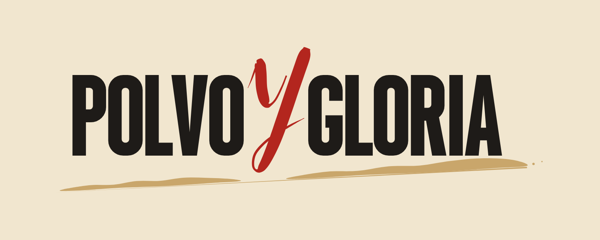
Polvo y Gloria
Carreras históricas en carretera abierta, de 1894 a 1970.
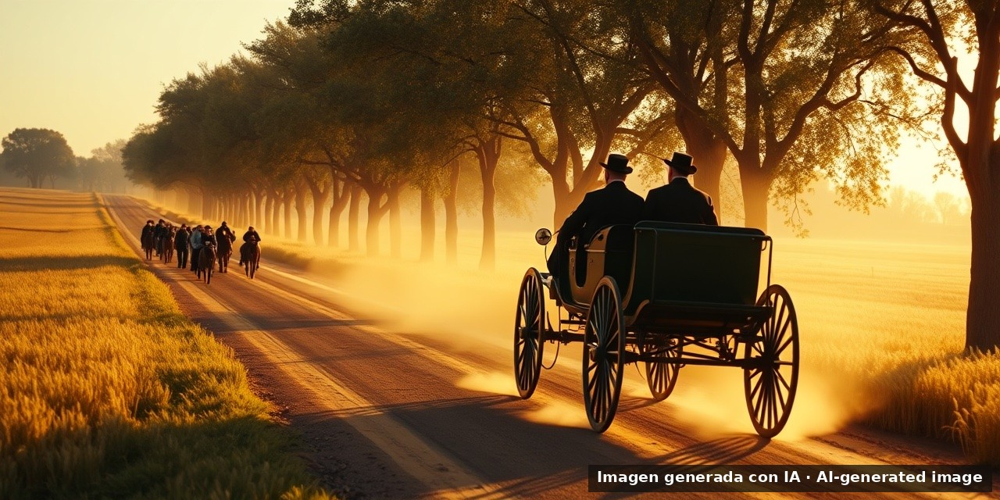
Antes de los circuitos, las carreras se corrían por la carretera de todos: entre pueblos, sobre macadán y adoquín, con un mecánico a bordo y una nube de polvo detrás. POLVO Y GLORIA te sienta en esos coches, desde los primeros «coches sin caballos» de 1894, sin acelerador y con tres marchas, hasta los últimos grandes maratones de carretera de 1970. Aquí no gana el que más corre, sino el que sabe llevar su máquina hasta la meta: no calar en la cuesta, elegir bien la marcha, cuidar las ruedas y no quedarse sin agua.
Es un juego de Shania Webstudio, hecho con el motor Godot, con un objetivo alto: buscamos un acabado visual de gama alta e hiperrealista en un ámbito acotado, con pocas carreras y pocos coches, pero con mucha profundidad.
Las épocas y la progresión
Era
Nombre (provisional)
Años
I
Los coches sin caballos
1894–1903
II
Los monstruos de los circuitos
1904–1914
III
Los gigantes de entreguerras
1919–1940
IV
La edad de oro de la carretera
1947–1957
V
Los últimos caminos abiertos (expansión)
1958–1970
Las cuatro primeras eras forman el juego; la quinta está prevista como expansión. Ahora se trabaja en la era I.
Cómo se avanza (diseño aprobado, todavía no está en el prototipo):
Empiezas con un coche de 1894, el n.º 15, y poco dinero, en francos oro de 1894. El dinero se gana conduciendo.
Los coches se dividen en clases como en 1894: gasolina ligera, gasolina de turismo y vapor. Cada clase tiene su podio y sus premios, además de la clasificación general. Los coches de vapor llegan después de los de gasolina.
Con lo que ganas compras otros coches de la época. En carrera libre se pueden conducir todos desde el principio.
El Gran concurso encadena los tres tramos reales de París-Ruan, con los premios de 1894.
Cada campeonato entrega un coche mítico.
Los rivales tienen cuatro niveles: Aficionado, Concursante, Constructor y Maestro.
La primera carrera: París-Ruan, 1894
El 22 de julio de 1894 se corrió el concurso de coches sin caballos de París a Ruan: 126 km, 102 inscritos, 21 coches en la final y 17 llegados a Ruan. El reglamento exigía una media de 12,5 km/h. En el juego, la carrera se corre en tres tramos de la carretera real:
Grande Corniche: col de Villefranche → col d'Èze → La Turbie
9,5 km · 15,0 %
París-Dieppe 1897
Éragny → Pontoise → Ennery
7,2 km · 15,0 %
París-Trouville 1897
Bajada de La Rivière-Thibouville
13,4 km · 14,0 %
Vuelta de 1899
Orgeval → Chambourcy → Saint-Germain (route des Quarante-Sous)
6,2 km · 10,5 %
París-Berlín 1901
Douzy → Sachy → Carignan
11,0 km · 6,7 %
París-Madrid 1903
Châteaudun → Cloyes
9,1 km · 8,4 %
Las pendientes de la carretera se limitan al 15 %, porque el relieve de 10 m mete los taludes en las carreteras de ladera.
Los coches de 1894
Tu coche: el n.º 15
Biplaza de motor delantero, sin acelerador: el motor va a régimen fijo. Tiene tres marchas, una cadena al eje trasero y caña de dirección, y llanta de hierro o de goma maciza, a elegir. Su peso y su potencia en la simulación son provisionales, sacados de las fuentes de la época, y se ajustarán si aparecen datos mejores.
Los 19 rivales de París-Ruan
Cada uno está modelado a partir de los grabados y las fotos de la prueba, con el dorsal que llevó en 1894. Están inspirados en los coches de la prueba, sin nombres de marca. En la versión de desarrollo esperan en la parrilla de salida; que conduzcan en el tramo es el siguiente paso.
La parrilla
N.º 4, tractor de vapor con victoria · biplaza (27), break (31), fiacre (30), phaéton (65) y dos vis-à-vis (28 y 42), sobre bastidor de tubo con motor trasero · dos-à-dos (13), cuatro plazas de nuevo tipo (14), biplaza con volante (24), cuatro plazas con toldo y flecos (64) y cuatro plazas de motor delantero (7) · victoria de motor trasero (85) · ómnibus cerrado de 6 plazas (18), furgón de reparto (19), coche ligero calentado al petróleo (44) y breack de 9 plazas (60) · break-ómnibus de vapor (10) · triciclo (61).
Conducción y simulación
Física de coches de época
Simulación propia de cada coche: motor a régimen fijo, embrague que patina, tres marchas, inversor (adelante, punto muerto y atrás), caña de dirección y freno.
El firme
Adoquín, macadán bueno y camino malo, con sus baches. Cada uno se nota en el agarre y en las sacudidas.
Manivela y quemador
El motor se arranca con manivela. Si sale con mala marcha o de golpe, da tirones y puede apagar el quemador, que se vuelve a encender con el coche parado.
Daños y averías
Ruedas que se rompen y se cambian por el camino, ballestas que ceden, y el motor que se cala si no se cuida el embrague.
Mandos
Teclado o mando. El menú tiene una guía, «Cómo se conduce».
Mapas reales: la cuesta de Rolleboise
Los tramos salen de los datos abiertos del IGN de Francia: el relieve real a 10 m, el eje de la antigua carretera nacional (que hoy lleva otro número) y las cartas del état-major de 1820-1866, de las que salen los pueblos, el agua y el bosque de la época. El generador convierte la carretera de 2026 en la de 1894.
En el tramo 2, entre Rosny y Bonnières, las travesías de Rolleboise y Bonnières son de adoquín. La cuesta de Rolleboise, con rampas del 5 al 7 %, es de macadán. El tipo de firme está deducido de la práctica de la época, no documentado tramo a tramo.
Rigor histórico
Con fuentes de la época
Coches, carreteras y pruebas documentados con fuentes de la época siempre que se puede: revistas y periódicos de 1894, grabados y fotos de la prueba, y las cartas del état-major. Los coches están inspirados en modelos reales, con nombres y detalles propios y sin marcas. En el taller solo hay las piezas que existían en cada época. Lo que las fuentes no dicen se marca como estimación, en los datos y en la pantalla del prototipo.
Las carreras de la memoria
Algunas carreras históricas acabaron en tragedia. Se abren al completar el juego y se tratan con respeto: el accidente real nunca se recrea, no hay celebración ni recompensas que se vendan, y una pantalla documental separa los hechos de la ficción.
Tecnología
Godot 4.7
Con .NET: la simulación del coche está en C# y el juego, en GDScript.
Blender por código
Cada coche se construye con un guion de Python (bastidor, ruedas, ballestas, faroles, bancos), con materiales, niveles de detalle y colisiones.
Mapas por código
Un generador en Python lee los datos del IGN y saca el relieve, los tipos de terreno y el eje de cada tramo.
Pruebas automáticas
Comprueban en cada cambio que la simulación da lo mismo dentro y fuera de Godot, además de los menús, los mandos, el firme y las averías.
En preparación
Fauna del valle del Sena
El primer tramo, en el valle del Sena en julio de 1894, tendrá los animales de la zona y de la época: vacas normandas, caballos de tiro y de silla, ovejas merinas, gallinas de Houdan y aves del río, como la garza real y el ánade real.
Los rivales de 1894, en concepto
Conceptos de los vehículos rivales, inspirados en la carrera París-Ruan de 1894: coches de gasolina y de vapor, con toldo, con capota o descubiertos, y un triciclo.
La época de entreguerras
Se prepara ya otra época, la de los años 20 y 30, con sus coches y su gente: biplazas deportivos, turismos descubiertos y la ropa de la calle de entonces.
Galería
El coche n.º 15 en la travesía de adoquín de Rolleboise
Travesía de adoquín de Rolleboise (tramo 2). Captura real de la versión de desarrollo; terreno provisional, sin vegetación.
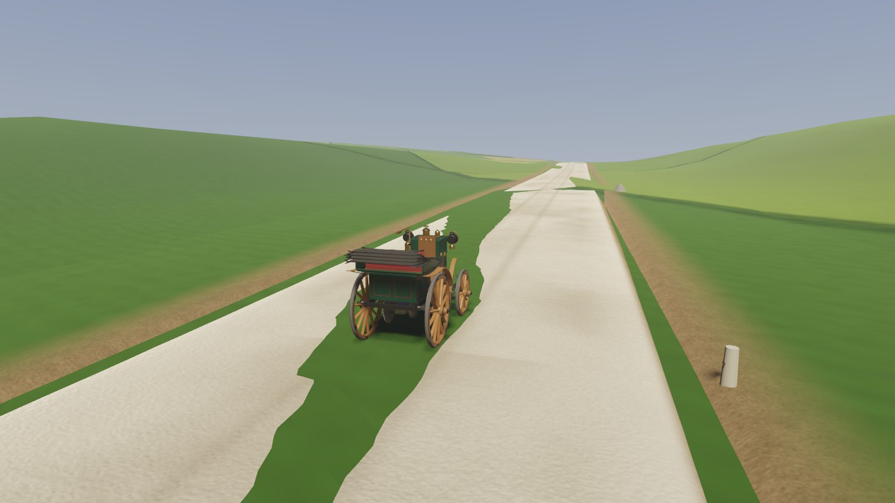
La cuesta de macadán de Rolleboise
La cuesta de macadán de Rolleboise. Captura real de la versión de desarrollo.
Salida con los 19 rivales en la parrilla
La salida, con los 19 rivales en la parrilla. Captura real de la versión de desarrollo.
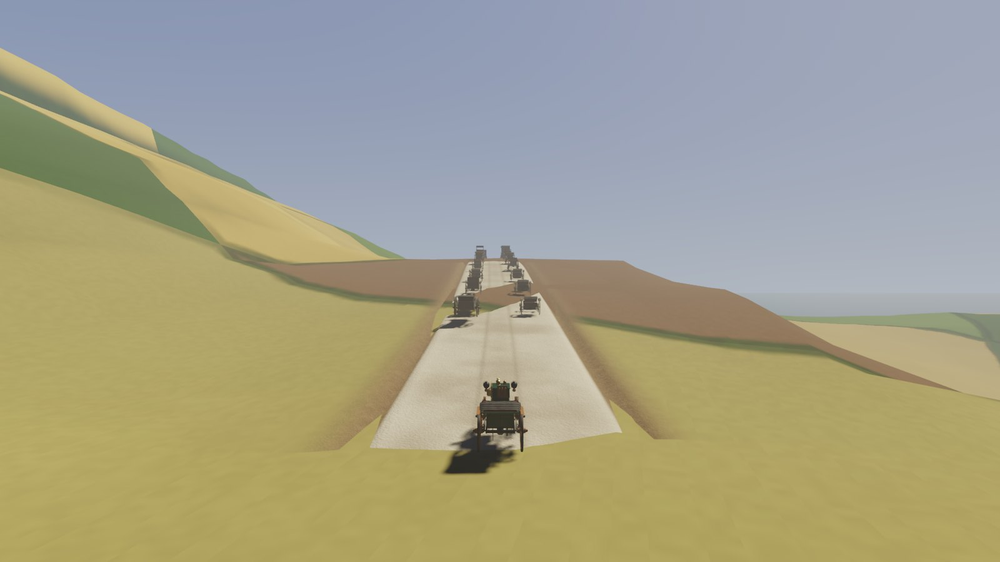
Grande Corniche, hacia La Turbie
Grande Corniche, hacia La Turbie (1897). Captura real de la versión de desarrollo.
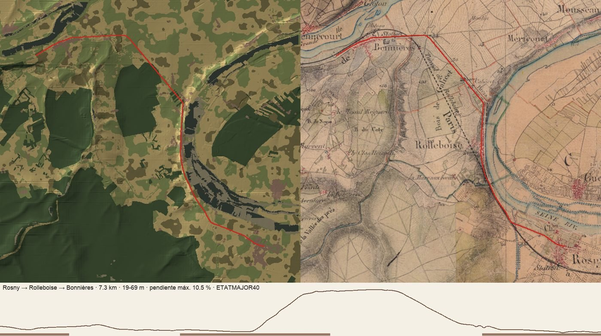
Mapa del tramo de Rolleboise
El tramo 2 sobre el relieve (izquierda) y sobre la carta del état-major (derecha), con su perfil. Mapa generado con datos del IGN.
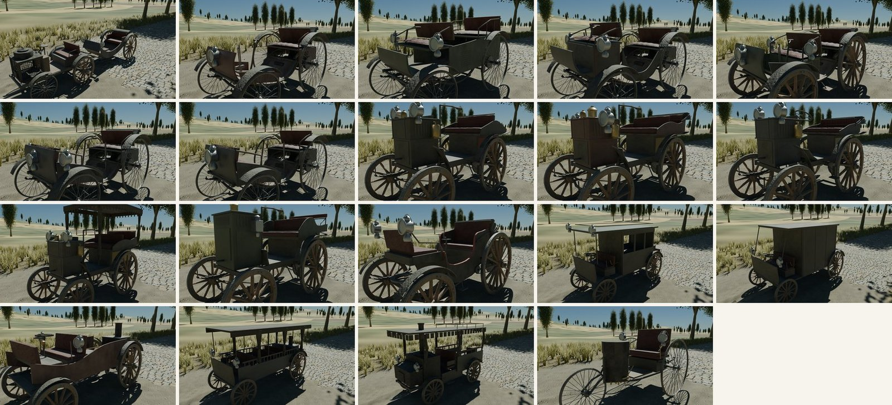
Los 19 coches rivales de 1894
Los 19 rivales de 1894. Render de los modelos 3D.
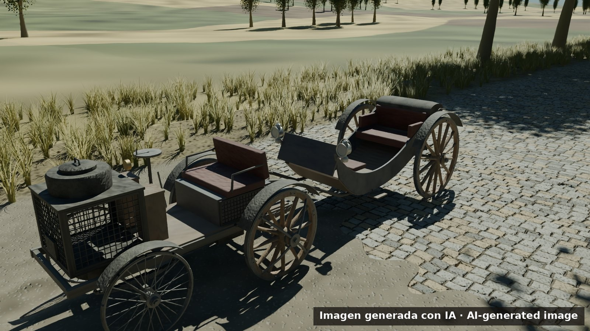
Tractor de vapor n.º 4
El tractor de vapor n.º 4 con su victoria. Render del modelo 3D.
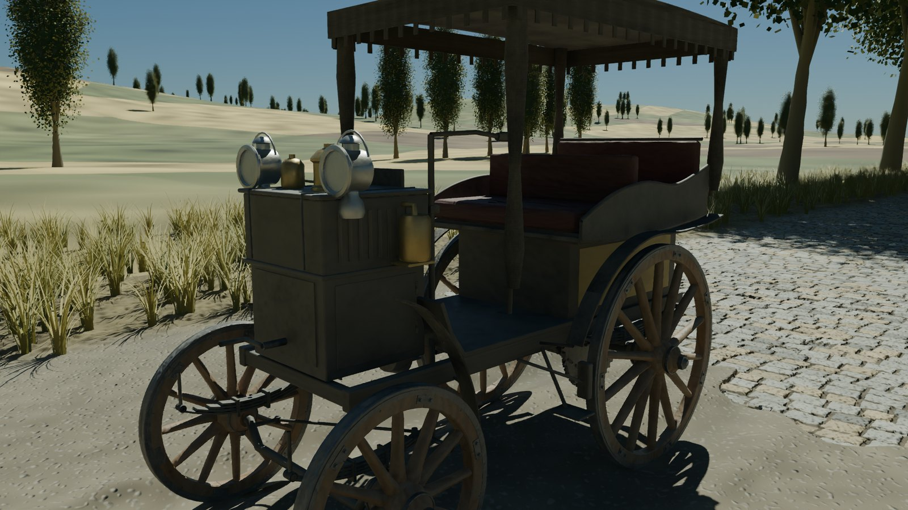
Coche n.º 64 con toldo y flecos
El n.º 64, con toldo y flecos. Render del modelo 3D.
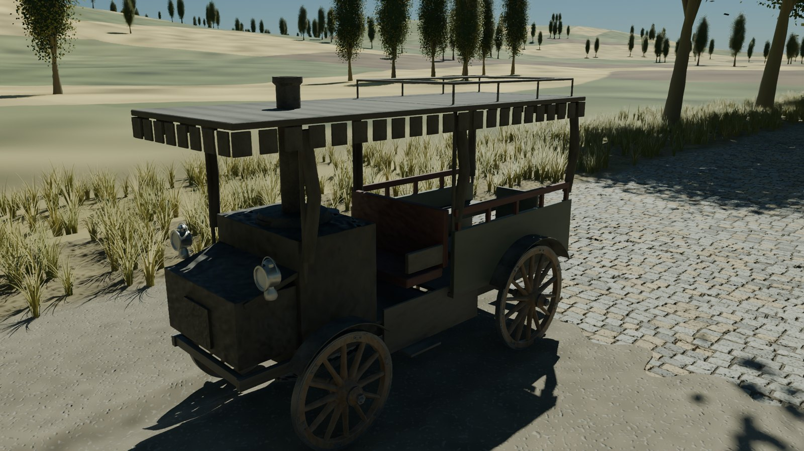
Break-ómnibus de vapor n.º 10
El break-ómnibus de vapor n.º 10. Render del modelo 3D.
Coche n.º 15 con materiales
Tu coche, el n.º 15. Render del modelo con materiales (librea en estudio).
Puesto de conducción
El puesto de conducción: caña de dirección, palancas y asiento capitoné. Render.
Luz de mañana, firme mojado
Luz de mañana con el firme mojado. Captura real del prototipo, calidad ultra.
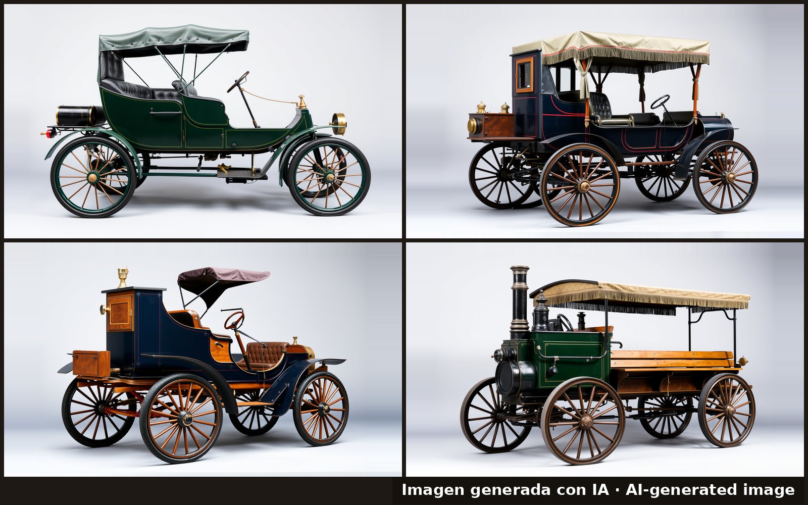
Rivales de 1894 (I)
Conceptos de vehículos rivales inspirados en la carrera París-Ruan de 1894. No es la foto de un vehículo real.
Rivales de 1894 (II)
Más conceptos de vehículos rivales inspirados en la carrera París-Ruan de 1894. No es la foto de un vehículo real.
Fauna del valle del Sena, 1894
Vaca normanda, caballo de silla, caballo de tiro, oveja merina, garza real y ánade real. Conceptos de la fauna del valle del Sena.
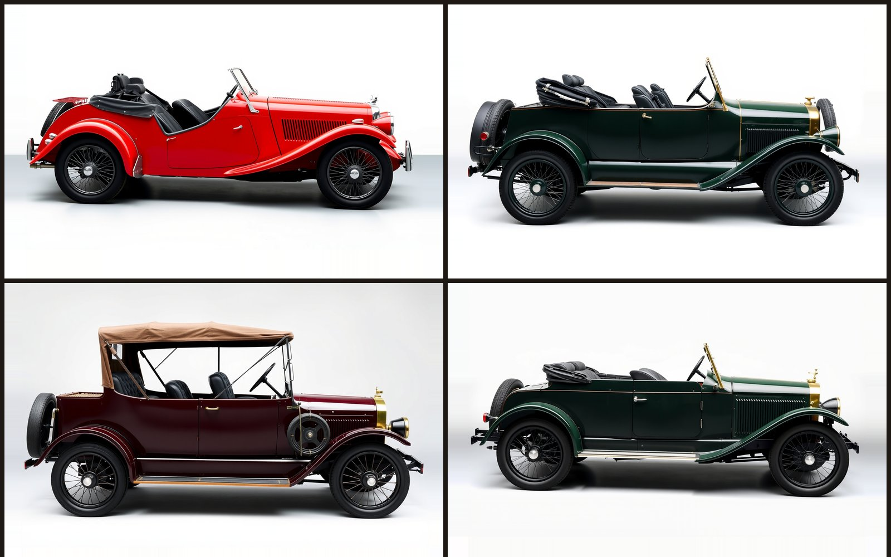
Coches de entreguerras
Conceptos de coches de los años 20 y 30, para la época de entreguerras. No es la foto de un coche real.
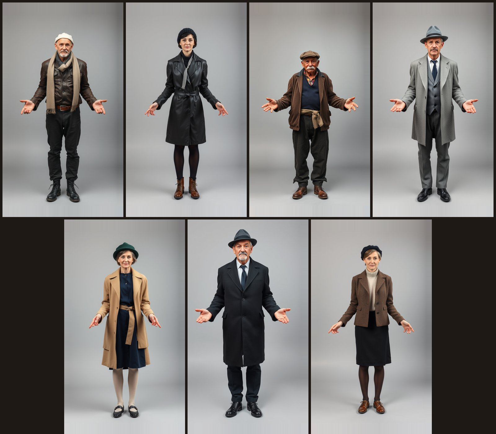
La gente de entreguerras
Conceptos de personas de los años 20 y 30, de frente, con ropa inspirada en la época. No representa a personas reales.
Estado
En desarrollo, prototipo. Ya se conduce el coche de 1894 por los tramos reales, con su física, sus marchas y sus averías. Gráficos, terreno, sonido y contenido son provisionales y van a cambiar: en los tramos todavía no hay vegetación ni pueblos. No hay fecha de lanzamiento.
Lo que viene (sin fechas)
Rivales que conducen el tramo con la misma física que tú, salen cada 30 segundos como en 1894 y más adelante se adelantan.
Vegetación, pueblos y cielo en los tramos.
La trayectoria: dinero, cochera, el Gran concurso y los coches míticos.
El Museo: ver los coches en alta calidad, abrirlos, arrancarlos, oírlos y montarse, con su foto y su historia.
La cabina y los tres niveles de manejo.
Las eras II a IV y, después, la expansión de la era V.
Las capturas son del prototipo en desarrollo, sin la interfaz, y no representan la calidad final.
Los renders son de los modelos 3D de los coches del juego, todavía sin terminar.
Ninguna imagen muestra marcas ni logotipos de fabricantes reales.
Cartografía y relieve: IGN (Institut national de l'information géographique et forestière, Francia) – RGE ALTI® (actualización del 1 de octubre de 2026), BD TOPO® (actualización del 12 de noviembre de 2026), SCAN État-major® 10K (edición del 12 de enero de 2011) y 40K (edición del 1 de octubre de 2011) y BD CARTO® État-major (actualización del 9 de octubre de 2026), según sus fichas de metadatos. Datos originales descargados de la Géoplateforme del IGN (geoservices.ign.fr, data.geopf.fr) entre el 12 y el 15 de noviembre de 2026 y reutilizados bajo la Licence Ouverte Etalab 2.0. Obra derivada: relieve remuestreado, tipos de terreno y trazado devuelto a 1894.
Créditos y licencias
Godot Engine, el motor del juego (licencia MIT).
Blender, para los modelos y los renders de los coches (licencia GPL; los modelos y las imágenes que salen de Blender son nuestros).
FLUX.1 [schnell], de Black Forest Labs (licencia Apache-2.0).
TripoSG, de VAST-AI (licencia MIT).
BiRefNet (licencia MIT).
scikit-image (licencia BSD-3).
Datos del IGN de Francia, bajo la Licence Ouverte Etalab 2.0 (ver arriba).
El banner y los conceptos están hechos con herramientas de IA.